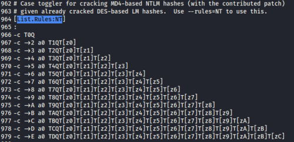

LANMANN --> NT
LANMAN password hashes are weak because the algorithm used takes all passwords and converts them to uppercase characters before calculating the password representation. This action (as well as several other design flaws) makes cracking LANMAN hashes far easier because we can just attack them with all uppercase alphabetic guesses.
Most Windows systems store the LANMAN hash along with the stronger NT hash, which preserves the case of the password. But on most Windows 2000 and later systems, authentication happens via NT hashes.
Thus, we have to run through all combinations of uppercase and lowercase of the LANMAN password until you hit the right combination. To do that we can use the lm2ntcrack tool
lm2ntcrack tool took as input an already-cracked LANMAN password(cracked) and an NT hash(to be cracked).
It applies all the various case combinations to the uppercase LANMAN password to determine the NT password, which is mixed case.
lm2ntcrack is been implemented by John the Ripper
With this method we can crack NT hashes faster(1 minute of cracking) compared to directly crack NT hashes (days of cracking)
1. We have the file
pwdump.txt with the LM and NT hashes
example: Administrator:500:AA1AB12D9BE8C0D18F900ABF62624751:A2855453E8F6E555E5F22956F7DAA398:::
2. First we have to crack the LANMAN hash that is pretty weak
john -format:LM pwdump.txt
The uppercase LANMANN password is "SUPERPASSWORD"
3. Now we have to
show all the cracked passwords from the pwdump.txt file and with the command
cut take only the second argument that is the password cracked.
We have to save it in a new file, in this example
cracked.txt john -show pwdump.txt | cut -d: -f2 > cracked.txt
4. Now we have to use as
wordlist the only word “SUPERPASSWORD” contained in cracked.txt and to it apply the rules NT contained in the file john.conf
 john -wordlist=cracked.txt -rules:nt -format=nt pwdump.txt
We have now found the NT password that is SuPerPaSsWord
Alternative
2. crack the LANMANN hash
john -format:LM pwdump.txt
3. we can use the option loopback(like --wordlist, but fetch words from a .pot file) without doing any
cut john pwdump.txt -format=nt -loopback=/root/.john/john.pot -rules=nt